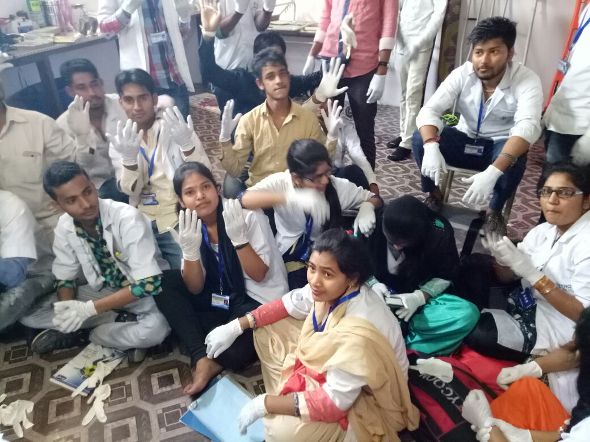

Arora Institute of Computer Education (AICE) is a one of the ISO 9001:2008 Organization, registered by N.C.T. Approved by Ministry of HRD(Under Govt. of India). Certificate Regd. AICE provides various training programs to the people of different categories like competitive and computer education in the Society. We fulfill the dream of Govt. of Haryana. & Govt. of India, to “Information Technology for everyone”. Today, the excitement of being computer literate may be seen in the students as well as other peoples also. Arora Institue of Computer Education (AICE) has been done at various cities and towns. It is running successfully in many districts of Haryana. Our main aim is to provide a minimal charge of the computer and competitive education to the poor people.